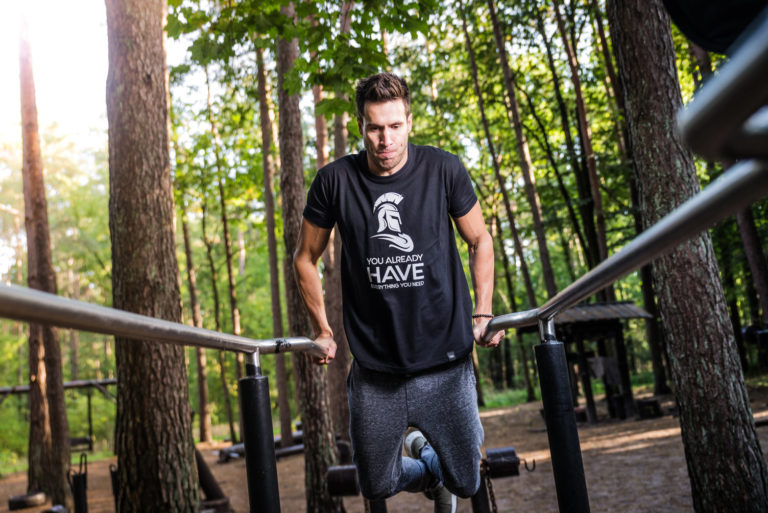
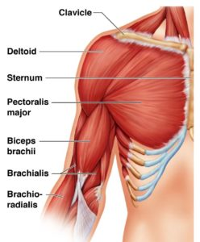
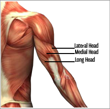

Güçlü ve büyük kol kasları için tavsiyeler
Daha büyük kol kası için daha sık çalışın
Antrenmanlarınızı doğru şekilde düzenleyin, eğer haftada 1 kol kaslarınızı çalıştırıyorsanız bunu 2’ye çıkarmayı deneyin.
Küçük kas grupları olduğundan dolayı haftada en az 2 kez çalışılması sizlere fayda sağlayacaktır.

Kol kası için doğru hareketleri seçin!
Genelde çoğu insanın problem yaşadığı en önemli noktalardan biri de budur, kol kaslarımızın bölümlerini ve biraz da olsa anatomisini bilir isek egzersiz seçimlerimizi çok daha faydalı şekilde ayarlayabiliriz.
Biceps (pazu) kaslarımızın uzun ve kısa başı vardır, bir de ön kolumuz ile bağlantılı olan bir kısmı daha vardır.
Hareketlerde tutuşumuz, vücudumuzun pozisyonu, hareketi uyguladığımız açılar bu bölgelere farklı şekillerde odaklanmamızı sağlar.
Tabii ki bir hareketi uygularken o bölgedeki kasların hepsini aktif ederiz fakat yine de açılara dikkat ederek farklı bölgelere odaklanabilirsiniz.
Örneğin triceps kaslarımızdan bahsedersek, 3 başlı bir kastır; uzun bölümü, orta bölümü, ve dış bölümü bulunmaktadır.
Hareketlerimizi seçerken bu kas bölümlerine dikkat ederek hareketlerimizi seçersek kol kaslarımızı çok daha izole şekilde çalışabiliriz.
Peki bu egzersizler neler olabilir, hemen bunlardan bahsedelim.
Kol anatomisi ve anatomiye göre en iyi egzersizler
Biceps
- Biceps Brachii (short head, Long head)
- Brachialis
- Brachioradialis (Ön kol)

Triceps
- Triceps Brachii (Medial Head)
- Triceps Brachii (Lateral Head)
- Triceps Brachii (Long Head)

Tekrar değinmek istediğim bir nokta daha var, o da bu egzersizleri uygularken tabii ki de o bölgedeki kaslarımızın tamamını çalıştırmış oluyoruz.
Tamamen bir bölgeyi izole olarak çalışmak imkansızdır, onlara eşlik eden birçok kas vardır, fakat farklı açılar farklı vücut pozisyonları egzersizlerden alacağımız verimi artırmaktadır.
Tabii bu hareketlerin yanında compound olan egzersizlerde sizlere fayda sağlayacaktır. Barfiks varyasyonları, şınav varyasyonları, deadlift vb.
Ayrıca çoğu sırt hareketi içinde de aktif olarak kol kasınız çalışacaktır.
En iyi biceps egzersizleri
- Barbell Curl (Geniş Tutuş): Biceps Short Head
- Dumbell İncline Curl: Biceps Long Head
- Chip Up
- Preacher Curl (Geniş Tutuş – Dar Tutuş) Geniş: Short Head, Dar: Long Head
- Barbell Reverse Curl: Brachialis, Brachioradialis (Ön kol)
- Hammer Curl: Brachialis, Brachioradialis (Ön kol)
- Concentration Curl: Biceps Long Head
Biceps Video
En iyi triceps egzersizleri
- Close Grip Bench Press: Triceps tüm başlarını çalıştırır.
- Ağırlıklı Dips : Triceps tüm başlarını çalıştırır.
- Dumbell Kickback: Triceps Lateral Head, Medial Head
- Rope Pussdown: Triceps Medial Head, Lateral Head
- Lying Barbell Triceps Extensions: Triceps Long Head
Triceps Video